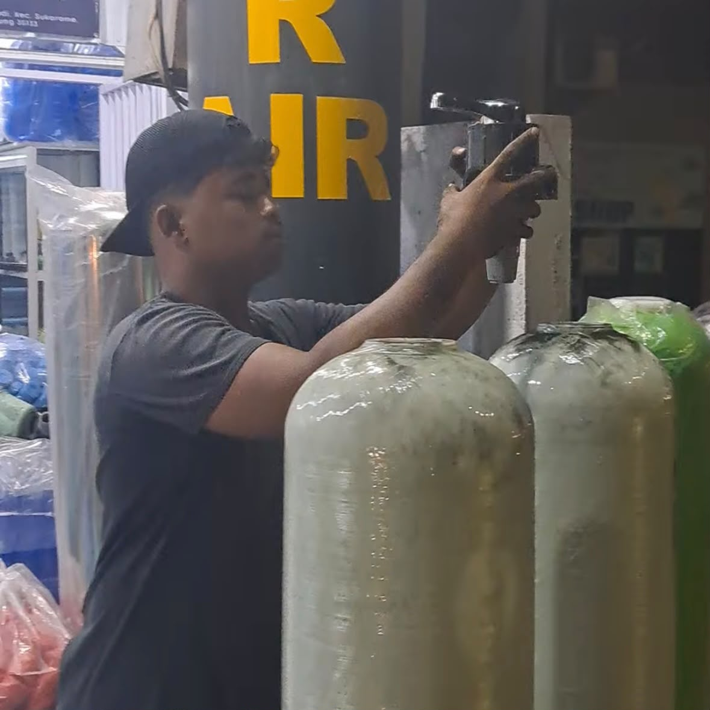
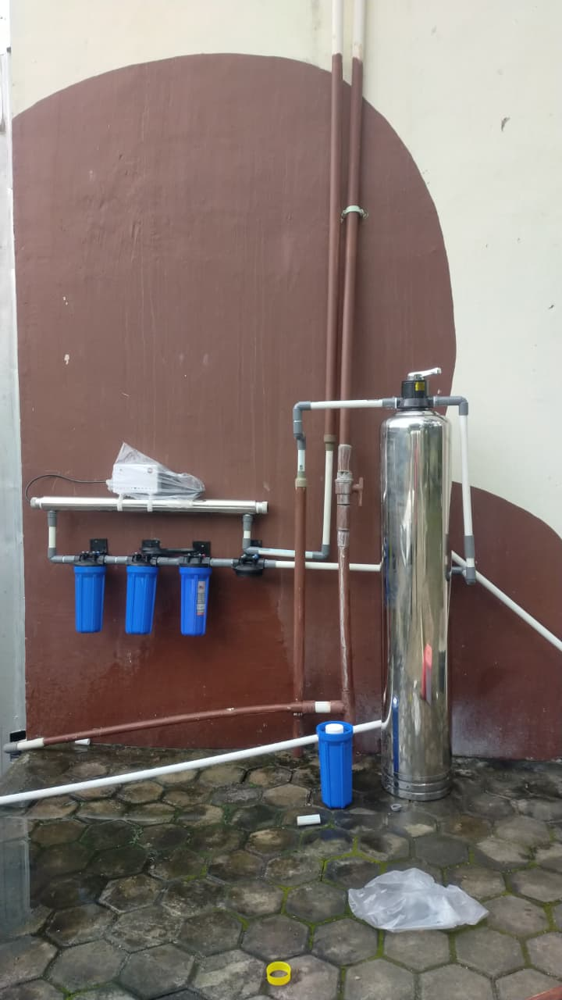

Katalog Instalasi Filter Air Bersih
Solusi tepat dan bergaransi untuk mengatasi masalah air sumur keruh, berendapan, kuning berkarat, hingga bau besi menyengat di rumah maupun tempat usaha Anda se-Provinsi Lampung.
1. Paket Filter Air Rumah Tangga
Menggunakan Tabung FRP 1054 dengan 3-Way Valve Manual, Bonus 1 Paket Housing Filter + Cartridge, & Garansi Instalasi 1 Bulan.

Paket Basic (1 Tabung)
Rp 2.500.000
1 Tabung FRP 1054 berisi Pasir Silika 20 kg & Karbon Aktif 12 kg. Efektif menyaring lumpur dan keruh.
Lihat Detail Spesifikasi
Paket Premium (1 Tabung)
Rp 2.800.000
1 Tabung FRP 1054 berisi Pasir Silika 20 kg, Karbon Aktif 10 kg, & Ferolite 10 kg khusus pengikat zat besi.
Lihat Detail Spesifikasi
Paket Eksklusif (2 Tabung)
Rp 5.000.000
2 Tabung FRP 1054 berisi Pasir Silika 20 kg, Karbon Aktif 25 kg, Manganese 10 kg, & Ferolite 10 kg.
Lihat Detail Spesifikasi
Paket Sultan (3 Tabung)
Rp 8.000.000
Filtrasi total 3 Tabung FRP 1054 (Silika 50 kg, Karbon 25 kg, Manganese 10 kg, Ferolite 10 kg, & Zeolite 10 kg).
Lihat Detail Spesifikasi2. Filter Air Industri (Water Treatment Plant)
Sistem pengolahan air bersih berkapasitas besar untuk kebutuhan komersial, instansi, dan industri.

Instalasi WTP Custom & Industri
Konsultasi & Survei
Perancangan sistem Water Treatment Plant (WTP) dengan kapasitas tabung besar, dosing pump, dan komposisi media yang disesuaikan langsung dengan hasil uji sampel air baku di lokasi proyek Anda.
Konsultasi WTP via WhatsApp3. Jasa Penggantian Media Filter Air
Layanan perawatan, kuras tabung, dan isi ulang material penyaring agar kualitas air kembali jernih maksimal.

Jasa Kuras & Ganti Isi Media Tabung
Hubungi Teknisi
Air hasil saringan mulai kembali kuning, keruh, atau berbau? Tim teknisi kami siap datang ke tempat Anda untuk melakukan pencucian tabung dan penggantian media (Pasir Silika, Karbon Aktif, Manganese, Ferolite, atau Zeolite).
Pesan Jasa Ganti Media via WA